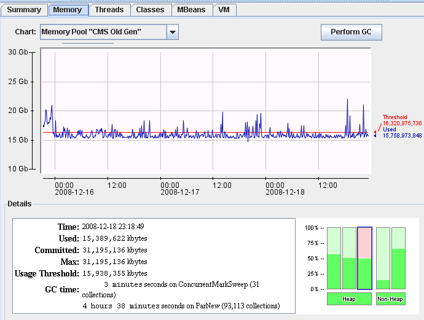

Web applications long pauses matter, GC pauses of 10-20 seconds are a issue.
Background batch processing applications and more tolerant of long GC pauses.
We have a back ground thread that creates a series of byte arrays ( rainy day fund in one hundred segments) that fills the memory up to our threshold of say 40% then the data is loaded from the database which takes a number of hours. The rainy day fund is incrementally decreased as the data is loaded from the database. That'll be all the red/pink activity for the first few hours.
Memory manager monitors memory usage by polling every second via JMX to see if we are over our next threshold of say 50% if we are we release the hard links to the "rainy day fund" and wait for the weak links to the "rainy day fund" to be reclaimed. When the weak links to the "rainy day fund" return null and we are over the upper limit we know we need to release some real cache, which we do by clearing the hard links to these elements. The background Java GC process tries to reclaim this memory, as long as the background process finishes ( no memory is reclaimed before the process finishes) before we get to 95% full we avoid a stop the world GC
You should see the memory usage being held to ~50% which we do. The red line looks like real objects being loaded from the database during the cache load process. Once these objects are loaded from the database we hold them in memory until we are forced to clear cache
When we are over our threshold we wish to release enough references so that we go back just under our threshold. We try to release the objects that haven't been used for a while first ( reverse of last used).

CR 6787254 Work queue capacity can be increased substantially on some platforms
CR 6786503 Overflow list performance can be improved
> With the full GC we aren't so fused about that in the sense that we had
> them before when we used the throughput collector. Now we get the full
> GC very infrequently, the issue is in production (we can't consistently
> reproduce in staging) we have had some extremely long pauses with CMS
> far longer than what we got with the throughput collector. These
> extremely long pauses are infrequent too ( about two weeks since the
> last one in production) but they occur when the "work queue overflow"
> occurs.
>
> We will try the parallel processing of references but will that not
> just improve the well behaved cases thus making the good case better (
> which are pretty good already) and not effect the bad overflow case ?
That is indeed true. Note that the really bad cases will
also now become more infrequent (because you have gone to
CMS from iCMS). But you are right that the parallel reference
processing will not affect those pauses (when they happen)
in any manner.
We _will_ fix those in a next iteration with the fixes for
the following CR's (bugs) that we have opened:-
CR 6787254 Work queue capacity can be increased substantially on some platforms
CR 6786503 Overflow list performance can be improved
Of these I have a fix for the latter, which we will
call Expt(3), once Expt(2) has concluded.
I hope to do the former (6787254) in the next few days
so we can call that Expt(4).
My hope is that at the end of Expt(4) (each subsequent
expt here is cumulative wrt earlier ones), we will
have satisfactorily resolved the issue from a product
standpoint and what will remain at that stage is
associating these CR's/fixes with the appropriate
Service/Case# (which hopefully someone in the list
will come up with) and have the service/support
staff provide you with a suitable delivery vehicle
for those fixes (after suitable internal QA and release
processes).
-- ramki
Can stem from long weak refs processing times.
Work queue overflow. The extent of the pause is roughly in proportion to the square of the number of overflows reported. This is in line with the computed cost of overflow handling that we noticed in current code which Sun is in the process of fixing. Sun is hopeful that the modifications Sun have made for reducing that cost might pay off in this case and reduce those pauses.
New option in jdk1.5.0_16 of -XX:+CMSScavengeBeforeRemark can reduce the number of objects that go into the overflow queue
According to the tuning guide, i-cms is more for 1 - 2 processor system. It's taking longer time to run as it tries to give cpu time back to the application while doing gc.
Ramki Says:-
“The largest component of the long(er) CMS-remark pauses in the log file
you attached stem from reference object processing. This can indeed
be exacerbated at least in 5uXX from the way iCMS runs. iCMS has
other disadvantages chief among which is that it causes a lot more of
what is called "floating garbage" (effectively the longer a collection
cycle lasts the greater the volume of floating garbage).
The higher bit here is that iCMS brings disadvantages as above
and while in a 1-2 processor situation iCMS can lead to more
consistent mutator operation, the large number of cores you
have ensures that there is no advantage (at least none that
i can see) of running with iCMS.”
Incremental is intended for Machines with only a few CPUs
Is not compatible with CMSInitiatingOccupancyFraction option
Since the memory for Objects is not return until some time after the object is no longer referenced it can be quite challenging to work out how much memory is actually being used.
We use JMX and predefined threshold notification APIs to do such harvesting more accurately, which attempt a minor clean up before return that we are over the threshold.
we use a lot of weak references (
millions) generally the design pattern is to have a hard and weak
reference for each object in cache. When we detect that we are low on
memory we null out the hard references and continue to use the weak
references. We have a weak reference to a large block of memory which
we null out the hard reference to when we go over the threshold, this
is used to tell us when the GC has done it's job and we need to clear
out more cache.
This is one of the main classes that uses
weak references... we will have many millions of these in memory.
This class is sub-classed depending on the type of key used.
|
CacheEntry.java |
27 public abstract class CacheEntry extends WeakReference implements InterfaceEntry 28 { 29 /** 30 * creates a new Cache Entry 31 * 32 * @param hash The hash id 33 * @param referent the object 34 * @param next the next element 35 */ 36 public CacheEntry(final int hash, final Object referent, final InterfaceEntry next) 37 { 38 super( referent); 39 40 this.hash = hash; 41 this.nextEntry = next; 42 hardReference = referent; 43 } 44 45 /** 46 * the next entry 47 */ 48 public InterfaceEntry nextEntry; 49 50 /** 51 * the hash 52 */ 53 public final int hash; 54 55 /** The last time this entry was fetched */ 56 public int data; 57 58 /** 59 * set the data 60 * @param temp the value 61 */ 62 public void setData( final int temp) 63 { 64 data = temp; 65 } 66 67 /** Don't allow the object pointed to by this entry to be deallocated */ 68 public Object hardReference; 69 70 /** 71 * clear the hard reference 72 */ 73 public void clearHardReference() 74 { 75 hardReference=null; 76 } 77 78 /** 79 * has this entry got a hard reference. 80 * 81 * @return true if there is a hard reference. 82 */ 83 public boolean hasHardReference() 84 { 85 return hardReference != null; 86 } 87 88 /** 89 * set the next entry 90 * @param entry the next entry 91 */ 92 public void setNext( final InterfaceEntry entry) 93 { 94 nextEntry = entry; 95 } 96 97 /** 98 * 99 * @return the next one 100 */ 101 public InterfaceEntry next() 102 { 103 return nextEntry; 104 } 105 106 /** 107 * 108 * @return the hash code 109 */ 110 @Override 111 public int hashCode() 112 { 113 return hash; 114 } 115 116 /** 117 * 118 * @param obj the object to check 119 * @return true if equals 120 */ 121 @Override 122 public boolean equals(final Object obj) 123 { 124 if (obj == null) 125 { 126 return false; 127 } 128 if (getClass() != obj.getClass()) 129 { 130 return false; 131 } 132 133 final CacheEntry other = (CacheEntry) obj; 134 if (this.get() != other.get() ) 135 { 136 return false; 137 } 138 139 if (this.hash != other.hash) 140 { 141 return false; 142 } 143 144 return true; 145 } 146 147 /** 148 * 149 * @return the data 150 */ 151 public int getData() 152 { 153 return data; 154 } 155 }
|
Name |
Summary |
|
-verbose:gc |
|
|
-XX:+CMSScavengeBeforeRemark |
http://www.javaperformancetuning.com/news/newtips083.shtml setting CMSScavengeBeforeRemark to true will force a minor collection to occur just before the re-mark - which may be better (makes the re-mark more parallel so shorter) or worse (if the minor GC itself is long enough, it looks like one long pause)
|
|
-XX:+CMSPrecleanRefLists1 -XX:+CMSPrecleanRefLists2 |
From Sun support:- In particular, if the long reference processing times persist, we can use -XX:+CMSPrecleanRefLists{1,2} as well as -XX:+ParallelRefProcEnabled. |
|
-XX:+ParallelRefProcEnabled |
From Sun support:- In particular, if the long reference processing times persist, we can use -XX:+CMSPrecleanReflists{1,2} as well as -XX:+ParallelRefProcEnabled. |
|
-XX:ParGCDesiredObjsFromOverflowList=20k |
<http://forums.sun.com/thread.jspa?threadID=5353614> We have tried values ranging from
|
|
-XX:+UseMembar |
We also tried -XX:+UseMembar but this didn't seem to have any effect, see bugs below.
|
|
-XX:+PrintGCDetails |
|
|
-XX:+PrintGCTimeStamps |
|
|
-XX:PrintCMSStatistics=2 |
as requested by sun support ( maybe only in staging)
|
|
-XX:+UseCMSInitiatingOccupancyOnly |
|
|
-XX:CMSMarkStackSize=256m |
|
|
-XX:CMSMarkStackSizeMax=5012m |
Increasing the max size will not improve the “work queue overflow”
This is not going to help with the pause you are experiencing. You are right that work queue overflow can prolong the remark-pause (although something this long is previously unheard of, at least in my experience). Unfortunately, the setting of CMSMarkStackSizeMax or CMSMarkStackSize is not going to benefit you here because that stack is not used for this phase of the CMS-remark.
Please file a bug with Sun (either through your existing support contract or through bugs.sun.com if you do not have a support contract), with full details of your platform and complete GC logs (that include the option -XX:PrintCMSStatistics=2).
You are almost certainly right that the overflow handling might be a main culprit here (although the extent of the slow down leaves me dissatisfied with that as the sole explanation of the pause). --------------------------------------------------------------
To respond to this post, please click the following link: <http://forums.sun.com/thread.jspa?messageID=10543393>
|
|
-XX:+UseParNewGC |
|
|
-XX:NewSize=256m |
|
|
-XX:MaxNewSize=256m |
|
|
-XX:SurvivorRatio=3 |
|
|
-XX:+UseConcMarkSweepGC |
|
|
-XX:+CMSClassUnloadingEnabled |
|
|
-XX:+CMSClassUnloadingEnabled |
Sun notice that we have +CMSPermGenSweepingEnabled. I recommend adding =CMSClassUnloadingEnabled to actually get the classes from perm gen unloaded which might help clear unnecessary static cruft from the old gen as well. |
|
-XX:+CMSIncrementalMode |
|
|
-XX:CMSIncrementalDutyCycleMin=40 |
|
|
-XX:CMSInitiatingOccupancyFraction=40 |
|
|
-XX:+CMSIncrementalPacing |
|
|
-XX:CMSIncrementalSafetyFactor=50 |
|
|
-XX:+PrintGCApplicationStoppedTime |
|
|
-Dsun.rmi.dgc.server.gcInterval=0x36EE8000 |
|
|
-Dsun.rmi.dgc.client.gcInterval=0x36EE8000 |
|
|
|
|
|
|
|
|
|
|